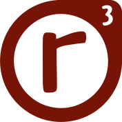

class: center, middle .ccimg[<a rel="license" href="http://creativecommons.org/licenses/by-sa/4.0/"><img alt="Creative Commons Lizenzvertrag" style="border-width:0" src="https://i.creativecommons.org/l/by-sa/4.0/88x31.png" /></a><br/>.smallfont[©xro, 2017-04-24]] # .bigfont[ realraum] # .bigfont[r³] --- background-position: center background-repeat: no-repeat background-size: contain background-image: url(photos/room/r3_flagge.jpg) --- # realraum in Graz ist ## Hackerspace * kreativer Umgang mit Technik * Wissen und Zugang: offen und frei -- ## DIY BioLab | BioHackerspace * Labor für Molekularbiologie / Chemie * Zukunft Biotechnologie selbst erfahren und kennenlernen --- # realraum ist ## Makerspace * für jede/n zugänglich * von Mitgliedern betrieben * Nutzung von 3D Drucker/Lasercutter/etc gegen Beitrag * Voraussetzung: Geräteeinschulung -- ## Chaostreff * Chaos Computer Club Dunstkreis --- class: center, middle # realraum ist ## ein Raum und eine Community --- # ein Raum mit Werkzeug zum Basteln * Elektronik, Antennen * Software, Algorithmen * Microcontroller, Sensoren, IOT * Holz, Metall * Genen, DNA, Microorganismen -- # eine Community mit Mitgliedern, die * eher technisch affin sind * gerne Basteln * gerne über Technik reden * gerne über Gesellschaft reden * gerne zusammen ein Getränk trinken * Chaos verstehen, mögen und trotzdem gerne genau sind --- class: center, middle # realraum ist ### was die Leute darin ### daraus machen --- # Genauer definieren * *meeehh* ## We love Chaos * Aktivitäten hängen sehr davon ab welche Mitglieder gerade aktiv sind * realraum Erleben variiert mit (Tages)Zeit und Umständen --- class: center, middle # Fotos sagen mehr als 1000 Worte --- background-image: url(photos/room/PANO_20160310_004708.jpg) background-position: center background-repeat: no-repeat background-size: contain # Der Hauptraum - LoTHR --- background-position: center background-repeat: no-repeat background-size: contain background-image: url(photos/room/DSC00156.jpg) # Lounge for Tinkering, Hacking --- background-position: center background-repeat: no-repeat background-size: contain background-image: url(photos/room/DSC00157.jpg) # Lounge for Relaxing, Reading --- background-position: center background-repeat: no-repeat background-size: contain background-image: url(photos/room/DSC00158.jpg) # Lounge for Tinkering, Hacking --- background-position: center background-repeat: no-repeat background-size: contain background-image: url(photos/room/DSC00159.jpg) # Lounge for Tinkering, Hacking --- background-position: center background-repeat: no-repeat background-size: contain background-image: url(photos/room/DSC00160.jpg) # Lounge for Tinkering, Hacking --- background-position: center background-repeat: no-repeat background-size: contain background-image: url(photos/room/DSC_3899.jpg) # Lasercutter --- background-position: center background-repeat: no-repeat background-size: contain background-image: url(photos/room/DSC_4732.jpg) # TESLA - E-Labor --- background-position: center background-repeat: no-repeat background-size: contain background-image: url(photos/room/DSC00155.jpg) # OLGA - OpenBioLabGrazAustria --- background-position: center background-repeat: no-repeat background-size: contain background-image: url(photos/room/DSC00163.jpg) # MaSha - Mashine Shack - Werkstatt --- background-position: center background-repeat: no-repeat background-size: contain background-image: url(photos/room/werkstatt_lade.JPG) # Werkzeugordnung --- background-position: center background-repeat: no-repeat background-size: contain background-image: url(photos/room/ducttape.jpg) # Hält die Welt zusammen --- class: center, middle # Projekte im Raum --- background-position: center background-repeat: no-repeat background-size: contain background-image: url(photos/projects/2015_-_1.jpg) # Handy Häkeltasche --- background-position: center background-repeat: no-repeat background-size: contain background-image: url(photos/projects/20161205135043-9b732254.jpg) # Zellkulturen --- background-position: center background-repeat: no-repeat background-size: contain background-image: url(photos/projects/20161205135055-3880b686.jpg) # DNA Extraktion --- background-position: center background-repeat: no-repeat background-size: contain background-image: url(photos/projects/20161205164340-a69ba05b.jpg) # Mikroskopie --- background-position: center background-repeat: no-repeat background-size: contain background-image: url(photos/projects/3332_b44c_960.jpeg) # ELWire --- background-position: center background-repeat: no-repeat background-size: contain background-image: url(photos/projects/3d_föhn.jpg) # 3D Druck --- background-position: center background-repeat: no-repeat background-size: contain background-image: url(photos/projects/cat5.jpeg) # 3D Druck --- background-position: center background-repeat: no-repeat background-size: contain background-image: url(photos/projects/DSC05915.JPG) # Bioreaktor --- background-position: center background-repeat: no-repeat background-size: contain background-image: url(photos/projects/bio_reactor_construction_and_design.jpg) # Automatisierung / Startups --- background-position: center background-repeat: no-repeat background-size: contain background-image: url(photos/projects/c81a3dd8-112b-4a0b-956f-3d349e9a3156.jpg) # µC - Hardwarehacking --- background-position: center background-repeat: no-repeat background-size: contain background-image: url(photos/projects/CCCZelte.jpg) # Hackercamp Ausflüge --- background-position: center background-repeat: no-repeat background-size: contain background-image: url(photos/projects/CUitYHOXAAAjoU5.jpg) # regelmäßige Treffen ## z.b. Funktionale Programmierung --- background-position: center background-repeat: no-repeat background-size: contain background-image: url(photos/projects/Deckenlichter_2017-01-15_22h11m13_realraum_C6903.JPG) # Deckenlichter Hacking --- background-position: center background-repeat: no-repeat background-size: contain background-image: url(photos/projects/Deckenlichter_2017-02-04_02h00m35_realraum_C6903.JPG) # Internet of Things --- background-position: center background-repeat: no-repeat background-size: contain background-image: url(photos/projects/Deckenlichter_2017-03-17_19h46m07_realraum_C6903.JPG) # Coole Beleuchtung --- background-position: center background-repeat: no-repeat background-size: contain background-image: url(photos/projects/ledpipe1.JPG) # Coole Beleuchtung --- background-position: center background-repeat: no-repeat background-size: contain background-image: url(photos/projects/DSC00012.jpg) # Retro Gaming --- background-position: center background-repeat: no-repeat background-size: contain background-image: url(photos/projects/DSC03880.JPG) # Zeitraffer Experimente --- background-position: center background-repeat: no-repeat background-size: contain background-image: url(photos/projects/DSC05202.JPG) # micro Quad Copter --- background-position: center background-repeat: no-repeat background-size: contain background-image: url(photos/projects/DSC06540.JPG) # Knoten Workshop --- background-position: center background-repeat: no-repeat background-size: contain background-image: url(photos/projects/DSC07099.JPG) # Selbstgebauter Türöffner (inkl Hardware/Firmware/PCB) --- background-position: center background-repeat: no-repeat background-size: contain background-image: url(photos/projects/whiteboard_tuer_steuerung_v2.jpg) # Zustandsdiagramme --- background-position: center background-repeat: no-repeat background-size: contain background-image: url(photos/projects/DSC_2185.JPG) # Alkometer in Biohazard-Form --- background-position: center background-repeat: no-repeat background-size: contain background-image: url(photos/projects/DSC_2859.JPG) # Lasercutterboxen --- background-position: center background-repeat: no-repeat background-size: contain background-image: url(photos/projects/DSC_3911.jpg) # Crafting --- background-position: center background-repeat: no-repeat background-size: contain background-image: url(photos/projects/DSC_4923.JPG) # SMD Löten --- background-position: center background-repeat: no-repeat background-size: contain background-image: url(photos/projects/hdd_lautsprecher.jpg) # Festplatte als Lautsprecher --- background-position: center background-repeat: no-repeat background-size: contain background-image: url(photos/projects/opendrop.JPG) # Vorträge .unten[ ### OpenDrop: Flüssigkeitstropfen werden im elektrostatischen Feld bewegt ] --- background-position: center background-repeat: no-repeat background-size: contain background-image: url(photos/projects/lasercutter_zeit_und_karte.jpg) # RFID # Kartenleser # LasercutterAccess # DeadPersonButton --- background-position: center background-repeat: no-repeat background-size: contain background-image: url(photos/projects/relay_tplink.jpg) # Relais mit GPIO mit WLAN Routern --- background-position: center background-repeat: no-repeat background-size: contain background-image: url(photos/projects/IMG_0830.JPG) # µC Workshops